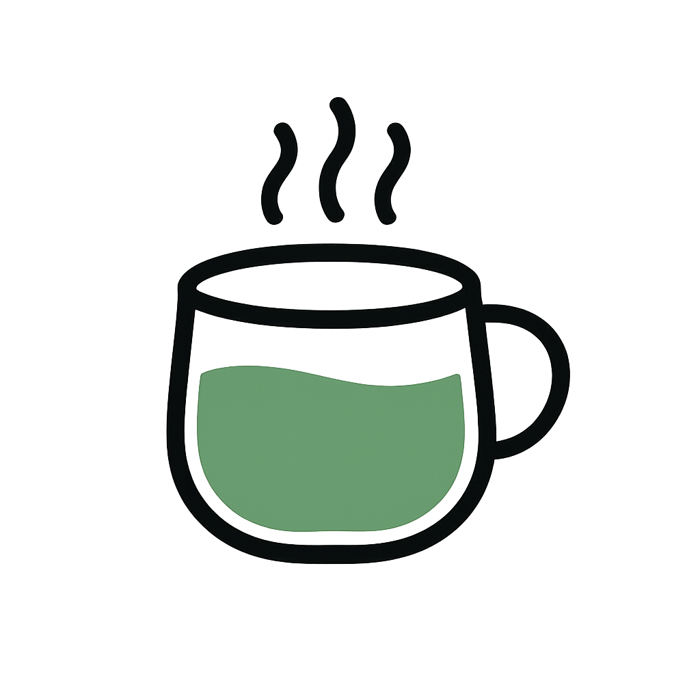

冷风呼呼，连续两天的阴湿天。窗口晾的衣服附着一层潮气，黏黏的像汗湿的腋窝。
没有阳光的温哥华是平和的。灰蓝的地，灰蓝的海，灰蓝的天。
在这样灰蓝的日子里，我好像失眠了。躺在干爽的被子里，四肢舒展，眼皮重重的，可入睡迟迟不来。翻身，再翻身，在十几度的空气里感到燥热，在窗帘未合尽的房间感到无止的黑。 这时候就想听一首温柔的钢琴曲，从琴键与琴键之间的空隙听到暗黄的光，在指节的凹与平里想象那双手的怅然与空旷。
前两天回想某事的时候，忽然想不起事情发生的时间。尝试按月份的次序推算大概的时间的时候，才发现对某一月，或某几个月都没有了确切的印象。努力回想那一个月发生的一件事，却怎么也想不起来。偶尔想起一件事，又不能确定是否是那个月发生的。这种感觉说来奇怪。
我在宿舍，巴士，实验室的进出里度过刚刚过去的一年，在冬日里迎来春风，从遮盖天空的粉红走到脚旁扬起樱花瓣，才发现枫叶变红了，汽车驶过的路面是黄灿灿的一片，门口的草地结起薄薄的白霜。
我发现这种景色让人失忆。
上一周的星期五，顶着睡眼去上我喜欢的基因信息学。上完课回家，不解为什么刚才的教室里坐满了人，而许多是平时没见过的面孔。。。我才顿时发现，那是这学期的最后一节课，也是我和许多人校园里的最后一节课。这种时刻，心中是否应该涌起某些热烈的情感？我努力意味，摸索，却什么也没体会出来。工程系楼前搭起临时的拍照亭，挂着“你的第一个结课日！”的标语。我回想不起我的第一个结课日，也许是在拥搡的人群间不断重复“不好意思让一下”，或是在宿舍里开心的补觉。
冷风呼呼，夕阳透过几片薄云照进房间，闭上眼，感受温暖洒散在额头。睁开眼时，阳光已被遮了去。